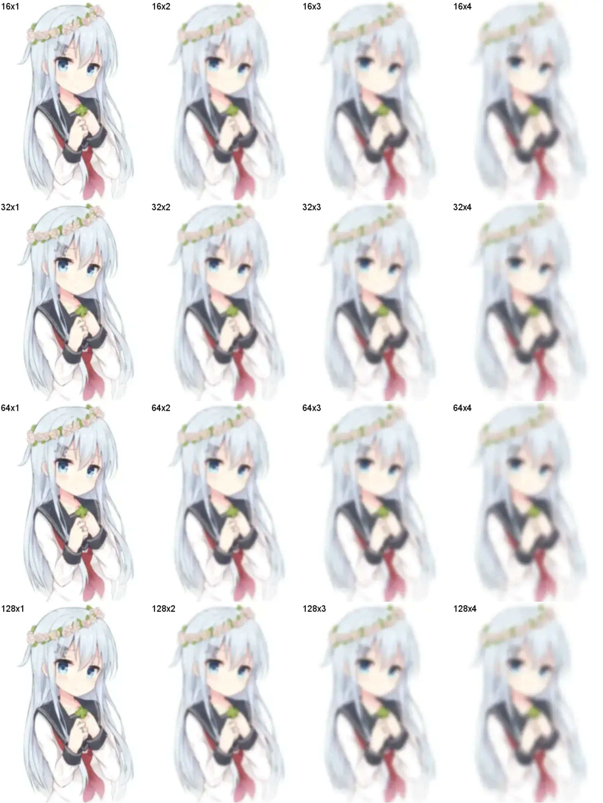

Graphics Magick 命令行使用方法
Graphics Magick 是一个 ImageMagick 的分支版本，但它提供了更易懂的命令行接口、 更精简的二进制体积以及更快速的性能。
它提供了 gm 可执行文件用于调用 2 ，也可以当作库提供给其他编程语言使用 3 。
GraphicsMagick 命令一览
gm 的命令行接口通常是:
gm {{ 子命令 }} {{ 选项 }} {{ 文件 }}
子命令一览：
- batch
-
以交互式或批处理模式处理多条命令
- benchmark
-
测试其他命令的性能
- compare
-
对比两张图片
- composite
-
合成图片
- conjure
-
执行 Magick Script 语言（MSL）的 XML 脚本
- convert
-
转换一张或一组图片的格式
- help
-
显示其他命令的帮助信息
- identify
-
描述一张或一组图片
- mogrify
-
变换一张或一组图片
- montage
-
蒙太奇，由一组图片创建一个合成图片（在一个网格中）
- time
-
测试其他命令的运行时间
- version
-
显示发行版本
- register
-
register this application as the source of messages
你可以在 version 中查看 Graphics Magick 支持的特性。
convert 命令
gm convert 的命令行参数布局是:
gm convert [options ...] infile [options ...] outfile
常用的选项有
- -blur
-
- param
-
<radius>[x<sigma>]
添加高斯模糊滤镜，radius 是高斯半径，决定了图像的模糊程度，值越大，越模糊； sigma 是高斯分布的标准差，决定了高斯分布的聚集程度，越大越分散，越模糊。
应用示例:
gm convert -blur 128 src.webp src-128.webp gm convert -blur 128x3 src.webp src-128x3.webp
这里是各种参数下的效果展示：
2D 图像应用的高斯函数是
\begin{equation*} G(x, y) = \frac{ e^{ - \frac{ x^2 + y^2 }{ 2 \sigma^2 } } } { \sqrt{ 2 \pi \sigma^2 } } \end{equation*} - -charcoal
-
- param
-
factor
转换为炭笔素描风格。 factor 是一个数字，表示轮廓的粗细。
-charcoal 1 - -define
-
- param
-
key=value,...
定义一个编解码器配置。使用
-define key=value定义新值，用+define key,...取消定义，用+define '*'取消所有定义。详细设置见 6 。 - -density
-
- param
-
<w>x<h>
设置图像的像素密度，默认单位是 DPI。
- -draw
-
- param
-
<primitive> <coordinate> <content>
在图像上绘制图元，详见 7 。 为了防止 content 中出现特殊字符导致读取错误，最好用
''将文本括起来。 - -enhance
-
去噪点。
- -fill
-
- param
-
color
图元的填充色，配合 -draw 使用。
- -flip
-
竖直对称。
- -flop
-
水平对称。
- -font
-
- param
-
font
指定一个字体，配合 -draw 使用。
- -format
-
- param
-
type
转换格式。一般用于转换多个图像文件。不需要指定输出文件名， 其名称将由输入文件推导而来（替换后缀名为对应格式）。
- -fuzz
-
- param
-
<distance>%
设置模糊处理的程度。
- -magnify
-
- param optional
-
factor
放大图像，默认两倍。
- -noise
-
- param
-
radius
去噪声，用 radius 指定邻域半径。
- +noise
-
- param
-
type
加噪声，指定随机数分布:
Uniform Gaussian Multiplicative Impulse Laplacian Poisson Random
- -quality
-
- param
-
value
图像压缩质量，0~100 。越高，损失越少。
- -trim
-
删除所有与角上的像素相同的像素。 如果使用 -fuzz 选项，则删除相近的像素。
实用案例
图片格式转换
任何支持的都可以自动识别文件后缀进行转换:
gm convert src.png dst.webp
特别地，如果希望进行无损压缩:
gm convert src.png -compress LossLess dst.webp
在图像上添加文本标注
需要:
gm convert src.png -font {{ 字体 }} -fill {{ 颜色 }} -draw "text {{ x,y 坐标 }} '{{ 文本 }}'" dst.png
文本外最好用
''包裹起来，否则可能因为一些特殊的字符导致命令被转义而出错可以用
-pointsize设置字号-draw命令除了 text 之外还可以画多种图元类型
这里有一个 PowerShell 的例子：
# 创建 $ix$j 模糊的图片并标注参数 param([int]$i, [int]$j) gm.exe convert -blur "$($i)x$($j)" src.webp "out-$($i)x$($j)-origin.webp" gm.exe convert -draw "text 0,18 '$($i)x$($j)'" -pointsize 18 -font Arial -fill 'black' "out-$($i)x$($j)-origin.webp" "out-$($i)x$($j).webp"
生成蒙太奇画册
使用 montage 命令:
gm montage {{ src.png }}+ [:options:] {{ dst.png }}
常用的选项有
-tile {{ m }}x{{ n }} 设置画册的网格样式，m 列 n 行 -geometry {{ w }}x{{ h }}+{{ b }} 设置整体的宽 w，高 h，和每个格块的间距 b
{{ src }} 可以传入通配符。
上面的那张 演示图 就是通过下面这个脚本创建的：
gm.exe montage out*.webp -geometry 3000x4000+10 result.webp
PDF 转透明图片
这在嵌入用 LaTeX 编译的公式时非常有用（对于没有额外渲染机制的媒体）:
gm convert src.pdf -trim dst.svg gm convert src.pdf -trim dst.png gm convert src.pdf -trim dst.webp
最好使用矢量图或者支持透明通道的图像格式。
转换 PDF 需要安装 GhostScript 8 。
在 Windows 系统中，GraphicsMagick 在寻找 GhostScript 的动态库时，会查找
\HKEY_*\SOFTWARE\GPL Ghostscript\#.##\GS_DLL 串的值所值的
路径（#.## 表示 GhostScript 的当前版本），而在安装 GhostScript 时，
不一定会修改注册表，因此可能需要手动添加，为了这个键可以记录在任何一个作用域中，
为了环境的独立性，可以安装到 HKEY_CURRENT_USER ，我安装的 GS 是 9.52 版：
[HKEY_CURRENT_USER\SOFTWARE\GPL Ghostscript\9.52] "GS_DALL"="%USERPROFILE%\scoop\apps\ghostscript\current\bin\gsdll64.dll"
特别说明的是，在 GraphicsMagick 读写 SVG 依赖 libxml2 和 FreeType， 这两者在 Windows 上的安装非常地麻烦，建议避开它们。
%! TEX = xelatex \[ \iint_{\Sigma} ( \frac{ \partial R }{ \partial y } - \frac{ \partial Q }{ \partial z } ) \mathrm{d}y \mathrm{d}z + ( \frac{ \partial P }{ \partial z } - \frac{ \partial R }{ \partial x } ) \mathrm{d}z \mathrm{d}x + ( \frac{ \partial Q }{ \partial x } - \frac{ \partial P }{ \partial y } ) \mathrm{d}x \mathrm{d}y = \oint_{r} P\mathrm{d}x + Q\mathrm{d}y + R\mathrm{d}z \]
gm convert sample.pdf -trim sample.webp

展示 PDF 转 WebP 的效果